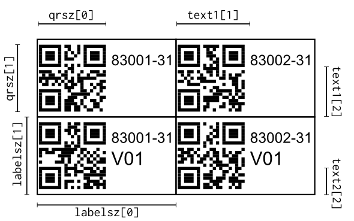
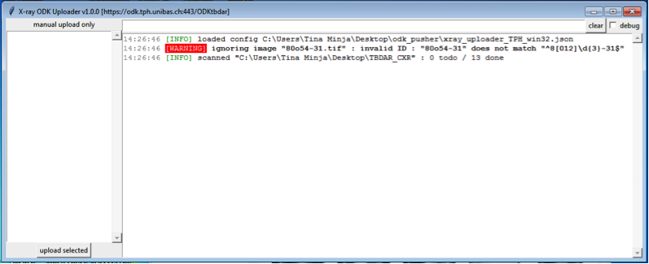

Tools¶
This chapter describes the additional tools included in the tools/ directory of the git repository. These additional programs are intended to be used in conjunction with odk_planner but they are not prerequisites for the web application itself.
Utility scripts¶
The script xls2xform.py can be used to translate a .xls form into a .xml XForm from the command line:
python xls2xform form1.xml form2.xml
Labeler¶
Another tool bundled with odk_planner is a Python script called labeler.py that generates labels with QR codes and study id numbers. The configuration specifies which labels should be printed, how to align the different parts of the label (size of QR code, how to split text label into sublabels and where to print them, and what paper is to be used (size of labels).
This tool is based on reportlab. To install it from the Python package index simply type the following command:
$ easy_install reportlab
To generate the labels first start with the example configuration labeler_example.xlsx that is also bundled with odk_planner. Either run the script with the configuration as its only parameter (python labeler.py labeler_example.xlsx) or drag the Excel workbook on the script in Windows explorer. The output will be stored in the output directory. The example configuration should work with labels of type Avery 3666.
The configuration Excel workbook has two sheets:
- page_layout : Contains one string for every label on the sheet of labels, starting the the label on the top left in cell A1.
- label_layout : Specifies the label size, as well as the size of the different parts of the label.
The YYYYY part of the participant IDs on the page_layout sheet will be replaced with the actual id (as specified by idrange on sheet label_layout). It is possible to print labels for multiple participants on a single sheet by specifying YYYY1, YYYY2, etc that will be replaced with consecutive numbers. See the config labeler_example.xlsx that makes use of this feature.
The following drawing shows the different parameters to set the label dimensions via the config file:
{kind=link}
Other settings on the label_layout page:
- drawrect : Setting 1 in for this config value will print a rectangle around every label. The idea is to use this, then print a page, then adapt the settings to perfectly match the labels. If you cannot match the label boundaries exactly, try to change the “Zoom” settings in the printer dialog.
- singlepage : Setting this to 1 results in a pdf document for every sheet of labels. Setting this to 0 will generate a single pdf with multiple pages.
- textre : Specifies how to split up the ID string into multiple parts for the label. You can specify (.*) if you want to print the whole id as a single part. Use pythex to construct your own expression.
ODK pusher¶
This directory contains different scripts for uploading XForms in a more or less automated way to an ODK Aggregate instance. Note that these scripts need Python 3 and will not run with an older Python version (due to SSL communications problems when connecting to ODK Aggregate from Python 2).
The python module aggregate can be used to push data to an ODK Aggregate instance. It also provides a command line interface for use by scripts, see:
python3 aggregate.py -h
Xray uploader¶
GUI program in tools/odk_pusher that watches a directory for new images and sends compressed copies wrapped into a simple XForm, with optional user provided data.
Prerequisites¶
- Python 3
- ImageMagick : The executable file convert (or convert.exe under windows) is used to scale images and convert them to JPEG prior to upload to ODK Aggregate. Note that windows has its own convert.exe executable and ImageMagick’s convert should therefore be installed in a local path or renamed. Also note that Windows needs the “Visual C++ 2010 Redistributable Package” (vcredist_x86.exe for 32 bit platforms and both vcredist_x86.exe and vcredist_x64.exe for 64 bit platforms).
Configuration¶
The program must be started with the name of a configuration file as parameter. The configuration file is a JSON encoded file and contains the following keys (use the file xray_uploader.json as template for a new configuration):
- server : full URL of the ODK Aggregate server
- username : username to use to identify to the ODK Aggregate server; this username needs “Data Collector” access rights (see the “Site Admin” page of the Aggregate interface)
- password : password for username
- xray_dir : path of the directory in which the Xray images are stored
- id_re : python regular expression (test online) that describes the format of the patient_id field. This field is autogenerated from the filename of every Xray image found in the directory. For example, if all patient_id have the form XXXX-01 where X is any number, then this configuration setting should be ^\\d{4}-01$ and valid Xray file names would be 1234-01.JPG or 1234-01.tif but not 1234-1.tif. Files that do not follow the naming convention defined with this field cannot be uploaded and a corresponding warning message will be generated in the program’s log output.
- convert_executable : Path to the convert executable. This program is used to convert the Xray image to JPEG and resize its width to a specified maximum size before uploading it to the Aggregate server. The convert executable can be downloaded from the ImageMagick download site.
- pixels : Width of image to upload to the server.
- manual_fields : A dictionary of field names and regular expressions. Before uploading Xray images, the user will be asked to fill in a value for each of these fields. The regular expressions ensure the consistency of the entered data.
- xform : Path to a XML XForm that was uploaded to the ODK Aggregate server and in which the Xray images should be stored.
- interval : Interval in minutes between checks of changes in the directory containing the Xray images.
- auto : If set to true, all images are automatically uploaded to the server as soon as they arrive in the directory. Cannot be activated with non-empty manual_fields.
Usage¶
Step 1 – Scan Xray films : Proceed as usual, but save images under directory “DesktopTBDAR_CXR” so that xray_uploader will find them. Make sure to name the file with a patient ID : No spaces allowed! No additional zeroes allowed!
Step 2 – Start xray uploader & choose images : The images can be chosen in the left pane (press Ctrl-A to select all). The upload is started by clicking on “upload selected” (or press the Return key). If the left pane is empty, all images from the TBDAR_CXR folder have already been uploaded.

Step 3 – Fill in additional information : Some details have to be filled in before the download can be started (your initials and an optional comment).

Final step – Check upload : In the left panel you should see a “uploaded image XXX” for every file that is uploaded. Also, the files disapper in the left pane (and the program will remember this for the next time).

Troubleshooting : If the left pane shows anything in red, this means there was an error somewhere. For example, when the file names are mis-spelled (below is a screenshot where a zero was accidentally replaced with a small letter “o”). Check internet connection and make sure you saved the images in the right directory.
MS-SQL uploader¶
GUI program in tools/odk_pusher that automatically uploads all new results from a MS-SQL database to a ODK Aggregate server. Since this program is based on ODK pusher, it also needs Python 3 to run. Its single dependency is the pure python library pypyodbc.
The MS-SQL database is polled every couple of seconds and new rows are used to fill in .xml forms and then these are sent to the Aggregate server. Once the server has accepted the incoming form, this is noted in a local .sqlite database to prevent sending the same form multiple times.
Configuration¶
All configuration is stored in a .json file that is either named mssql_uploader.json and stored in the current directory or specified to the script as a command line parameter.
The configuration is relatively complex, as it involves extracting the data from one or multiple tables with a .sql script, filling in custom one or multiple .xml forms and logging into a MS-SQL and a ODK Aggregate server. The following paragraphs describe a sample configuration to extract data from a Cepheid GeneXpert system. Please note that this example is thought purely for educational purposes and that neither the proper working nor the permission to actually use this script can be provided by the author. The files can be found in the tools/odk_pusher/xpert/ directory.
The file mssql_uploader.json has the following keys:
- title : use this to customize the title of the uploader window
- interval : how many seconds to wait between successive polls of the MS-SQL database
- mssql : a dictionary containing the connection parameters of the MS-SQL database; the specified user must have read access to the database in question
- database : name of the database to poll data from
- server : MS-SQL server and instance name
- username and password : credentials of user with read access to the database
- odk : a dictionary containing the connection settings to upload data to the ODK Aggregate server
- server : full URL of the ODK Aggregate server
- username : username to use to identify to the ODK Aggregate server; this username needs “Data Collector” access rights (see the “Site Admin” page of the Aggregate interface)
- password : password for username
- sqlitedb : name of a SQLite database file that is used to mark which files have already be uploaded; the file mssql_uploaded.sqlite in the xpert/ directory is such an empty database; this empty database can also be generated by calling the mssql_uploader.py script with the arguments create_db empty.sqlite
- tables : a dictionary that describes what data should be extracted from what tables; they keys of this dictionary are used to identify the table data and must therefore not be changed (when changing these names, all rows from the renamed tables will be uploaded a second time)
- xform : is the .xml file of a xform that will be used to transmit the data; see for example the file GXP2_test.xml in the xpert/ directory (generated from GXP2_test.xls)
- sql : a MS-SQL script that selects the data to fill in the .xml xform; this script should select the right rows (e.g. based on date or patient-ID) and must contain some special markers, refer to GXP2_test.sql in the xpert/ directory for an example
- rowid : one or several columns that are selected by the MS-SQL script and that will be used to uniquely identify the row
- rowname : one or several columns that will be used to identify the columns when displaying a progress update (i.e. the human readable representation of the row)
Usage¶
The program runs fully automatically. Simply copy the configuration files in the same directory and start the script. The files mssql_uploader.log and mssql_uploader_debug.log will contain the same logging information that is also displayed in the main window. After installing of py2exe you can create a self-contained executable distribution for windows using the provided setup.py